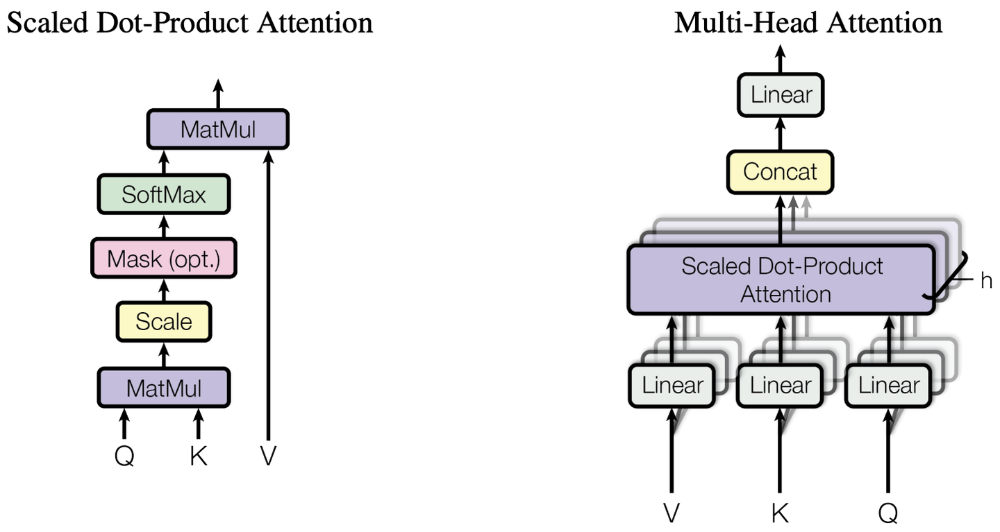
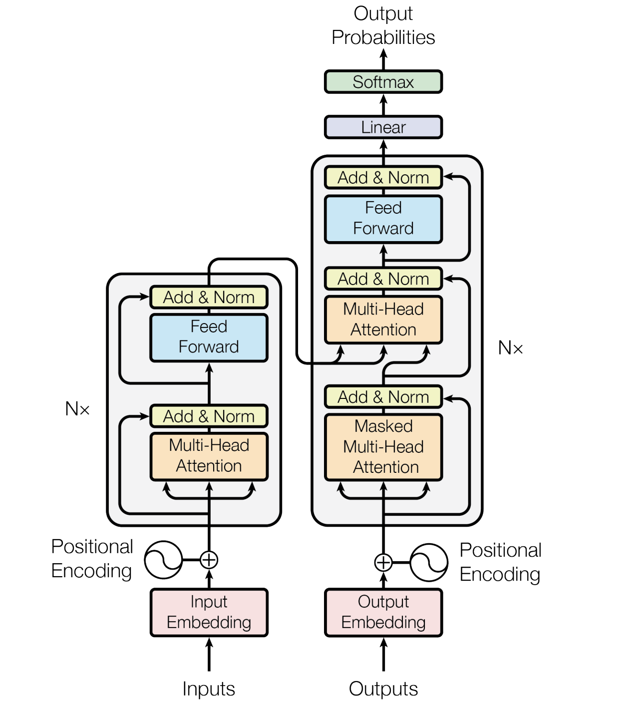
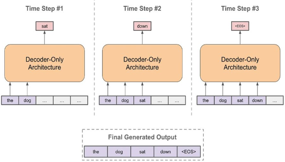
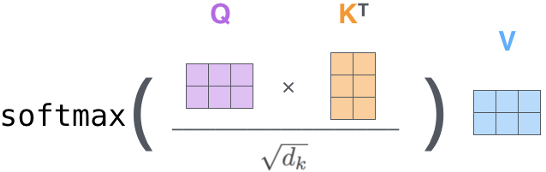
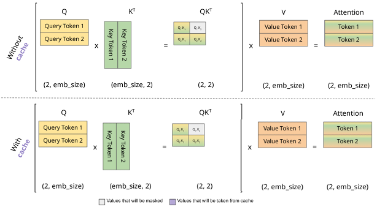
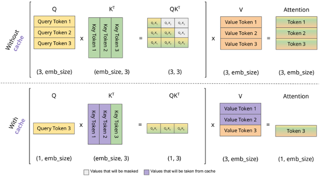
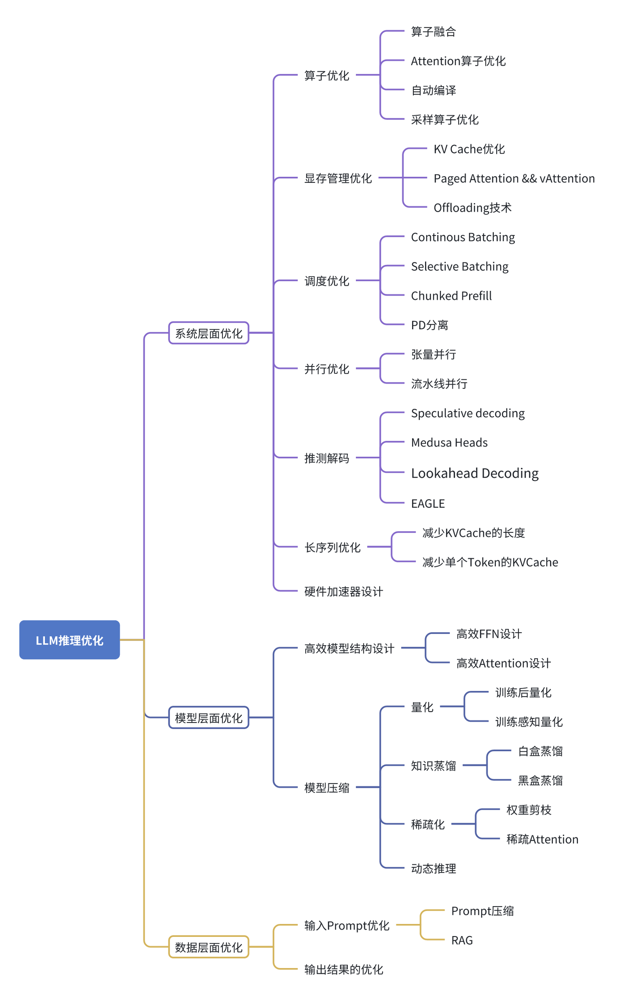

浅谈大语言模型推理相关技术之一：综述
引言
随着ChatGPT应用的爆火出圈，大模型相关的技术被广泛关注。利用大模型技术来生成文字、图像、音频、视频、3D模型等多种模态数据的应用也层出不穷，诸如ChatGPT(文字)、Midjourney(图像)、Suno(音频)、Sora(视频)、Meshy(3D)等。同时，融合文本、图像、视频、音频等多种模态数据的大模型研究也日益增多。这些大模型以其庞大的参数量著称，对计算和内存资源的需求巨大，给模型训练和推理部署带来了挑战。
本文聚焦于大语言模型（Large Language Model, LLM）推理技术，从Transformer结构出发，探讨大模型推理的难点及常见解决方案。鉴于篇幅限制，本文将以系列文章形式发布，本篇为综述。
大语言模型推理的基础知识
大语言模型的基本概念
大语言模型（LLM）是人工智能领域，尤其是自然语言处理（NLP）领域的一项关键技术。它们是基于深度学习算法（如反向传播、梯度下降）训练的庞大神经网络模型，专门用于理解和生成人类语言文本。
LLM的核心在于其庞大的参数规模和训练数据集。这些模型通常包含数十亿至数万亿个参数，通过大规模数据集的预训练，学习丰富的语言知识和模式。这种预训练使LLM能够捕捉语言的语法、语义和上下文信息，从而在多种NLP任务中表现出色。LLM的应用范围广泛，包括但不限于机器翻译、文本摘要、情感分析、问答系统、对话生成等。随着LLM的发展，其在知识获取、智能助手、内容创作等领域的潜力也日益显现。
然而，LLM也面临数据偏见、可解释性、计算资源需求量大等挑战。本文探讨的大语言模型推理技术旨在解决计算资源消耗问题，通过一系列方法减少大模型推理部署过程中的资源消耗。
Transformer架构
2017年，Google发表的“Attention is all you need”论文标志着使用Attention机制的Transformer网络结构成为NLP领域的主流。随后，基于Transformer的预训练语言模型BERT和GPT脱颖而出。除了NLP领域，Transformer结构也被应用于其他领域，如计算机视觉领域，催生了ViT和DiT等一系列新模型。Transformer结构已成为MLP、RNN、CNN后又一主流基础网络结构。

Scaled Dot-Product Attention（如上图左侧所示），亦称Self-Attention（自注意力）。Multi-head Attention（MHA）（如上图右所示）, 通过多个Head学习不同的子空间语义，最后通过Concat和Linear操作降维至单Head的Size，相当于多个子空间语义表示的Ensemble。自注意力机制是Transformer架构的核心创新之一，能够动态地为序列数据的每个位置分配不同权重，捕捉长距离依赖关系。具体步骤如下：
输入嵌入：将输入序列转换为词嵌入向量。
线性变换：通过三个不同的线性变换得到查询向量（Query）、键向量（Key）和值向量（Value）
计算注意力：计算查询向量和键向量的点积，得到注意力得分矩阵，除以缩放因子（通常是键向量维度的平方根），并通过Softmax函数归一化，得到注意力权重。
加权求和：将注意力权重与值向量相乘，并进行加权求和，得到自注意力的输出。
自注意力机制的公式表示如下：
其中Q、K、V分别表示query、key和vaue向量， 表示key向量的维度。自注意力机制的优势在于其全局依赖关系的捕捉能力，扩展模型的感受野，并因其并行处理特性，显著提升计算效率。然而，这一机制在精准捕捉有效信息方面存在局限，计算复杂度高且需要大量数据训练以优化性能。 
Transformer的整体结构遵循Encoder-Decoder形式，其中Decoder的每个Block比Encoder多了一个Masked Multi-Head Attention（MMHA）。MMHA结构与MHA相同，但Mask矩阵中要屏蔽当前位置之前的词与当前位置之后的词的联系，防止文本下文信息提前泄露，如机器翻译等生成式任务是逐步从前到后生成的。
大模型推理过程

LLM推理流程如图中所示，以文本补全场景为例，用户输入的prompt为"the dog"，在推理的第一步LLM会输出"sat"；第二步，将"the dog"+“sat"拼接作为新一轮推理的LLM输入，LLM会输出"down”；第三步以此类推，输入为"the dog sat down"，输出为结束符。最终，整个文本补全任务的输出为"the dog sat down"。
基于LLM推理这种迭代式推理流程，不难发现，在step2中输入"the dog sat"是存在冗余的，“the dog"作为step1的输入已经进行过一次计算，step2冗余计算了"the dog”。因此，基于LLM推理冗余计算这一特性，可以对冗余计算部分进行缓存。KV Cache正是基于这一出发点而提出。
基于LLM推理的迭代式推理流程，可以发现在step2中输入"the dog sat"存在冗余，“the dog"作为step1的输入已计算过，step2冗余计算了"the dog”。因此，基于LLM推理冗余计算特性，可以对冗余计算部分进行缓存。KV Cache正是基于此提出。
前文已说明scaled dot product attention（SDPA）结构是Attention机制的基础单元，KV Cache正是在计算SDPA时对K，V进行缓存以大幅减少计算量。

如图中所示，对应2.3节第一幅中的Time Step #1，我们在进行第一步推理时，无论是否开启KV Cache，用户输入token的长度是2，因此我们的Q、K、V的对应token长度也是2。是否开启KV Cache对整体计算过程影响不大。

到了Time Step #2推理时，无KV Cache情况下，K、V矩阵都需要通过计算得到。如果开启KV Cache，K、V可以只计算token长度等于1（即新增加的"sat"token所对应的向量），而紫色部分是从上一个step缓存的K、V读取出来。此外，我们还可以注意到Q矩阵在KV Cache场景下从矩阵变成了向量。这一特性也使得LLM推理中Attention计算耗时的GEMM变成GEMV，使得该任务从计算密集型（compute-bound)变成访存密集型(memory-bound)。当LLM任务中output长度较长时，整个推理流程会变成访存密集型任务。

对于上述的step 1，我们一般称为prefill阶段，大部分场景下用户的输入token长度会有上K，甚至上M，这个过程是计算密集型，往往耗时较长。对于step 1之后的所有step，我们一般称为decoding阶段，这个过程每次输入token长度为1，核心矩阵计算都是GEMV的，因此是一个访存密集型。
LLM推理存在的挑战
LLM在实际部署应用中，面临着多种不同方式的挑战。
延迟和响应时间：高效的大型语言模型推理需要实现低延迟和快速响应时间，尤其是在聊天机器人、虚拟助手和交互系统等实时应用中。平衡模型复杂性与推理速度是关键挑战，需要优化算法和系统架构，以最小化响应时间，同时不牺牲准确性。
模型大小和内存占用：大型语言模型因其大量参数，带来显著的内存需求。在内存受限的设备上部署此类模型是挑战，需要开发有效的模型压缩技术和系统优化，以减少内存占用，同时不牺牲性能。
可扩展性和吞吐量：推理系统在生产环境中经常面临不同级别的请求负载。确保可扩展性和高吞吐量以有效处理多个同时请求，需要并行计算、请求调度以及其他系统级优化，以有效地在资源间分配计算工作负载。
硬件兼容性和加速：高效利用硬件资源对于大型语言模型推理至关重要。将LLM模型适应不同的硬件平台和架构，包括CPU、GPU和专用加速器，需要硬件感知的算法设计和优化，以充分利用底层硬件的潜力。
准确性与效率之间的权衡：优化LLM推理的效率有时可能涉及与模型准确性的权衡。在模型大小、计算复杂性和性能之间找到正确的平衡是一项挑战性任务，需要仔细考虑和评估各种算法和系统级技术。
推理效率的关键指标
延迟（Latency）：对于LLM推理，我们首要关注的就是延迟。如果LLM推理耗时太长，用户需要等待的时间就会很长，这会直接影响到用户体验。LLM推理延迟可细分为prefill阶段延迟和decoding阶段延迟，对应该术语就是首字延迟（TTFT，time to frist token）和字间延迟（TBT，time between tokens，也称TPOT，Time Per Output Token）。对于不同的LLM任务，可能关注的延迟也不一定相同。对于聊天类的任务，我们可能会更加在意首字延迟。而对于长文本生成任务，我们可能会更在意整体延迟时间（当decoding阶段足够长时，字间延迟占据整体延迟时间的绝大部分），整体延迟等于TTFT + TBT* (生成Token总数量-1)。
吞吐量（Throughput，单位tokens per second）：对于一个推理服务而言，吞吐量是我们整体要考虑的指标。因为它决定了整个服务需要多少服务器（成本）。实际过程中，吞吐会与QPS（每秒请求数，Query per Second）、以及batch大小等配置相关，对应不同QPS，我们可能需要动态调整batch大小以达到最优的吞吐量。
内存使用（Memory Usage）：这里所提内存，对于LLM而言更多是指GPU的显存。因为LLM参数量比较大，需要有足够多显存来存储模型权重、激活值以及KV Cache。虽然显存占用一般不是首要考虑的指标，但减少显存占用也可降低成本。
LLM推理优化的分类
LLM推理优化的主要目的是为了降低LLM服务的成本。众所周知，LLM Pretrain训练需要成千上万，甚至数十万张英伟达显卡集群来处理。然而LLM大规模服务也是需要大量显卡的，峰值请求数量越高，需要的显卡数量越多。 暂时无法在飞书文档外展示此内容

LLM推理优化可被划分为三个主要方向：系统工程层面、模型层面以及输入数据层面的优化。
在系统工程层面，优化措施涵盖了多个关键方面，包括但不限于算子级别的性能提升、显存资源的高效管理、任务调度的优化、并行计算策略的改进、推测性解码技术的实施、长序列处理的优化，以及针对硬件特性的加速设计。
模型层面的优化则聚焦于提升模型结构的效率和实施模型压缩技术。在高效模型结构设计方面，重点在于开发高性能的前馈网络（FFN）和优化的注意力（Attention）机制。而在模型压缩领域，主要技术包括参数量化（Quantization）、知识蒸馏（Knowledge Distillation）、参数稀疏化（Sparsification Optimization）以及动态推理（Dynamic Inference）等。
至于输入数据层面的优化，则主要集中在输入数据的压缩技术，如提示词的剪枝、总结和检索增强，以及对输出结果的规划和优化。
后续会分三部分分别介绍系统层面优化、模型层面优化和数据层面优化。
Comments
comments powered by Disqus